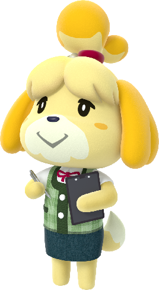
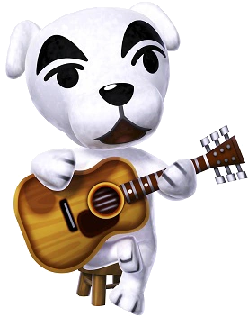
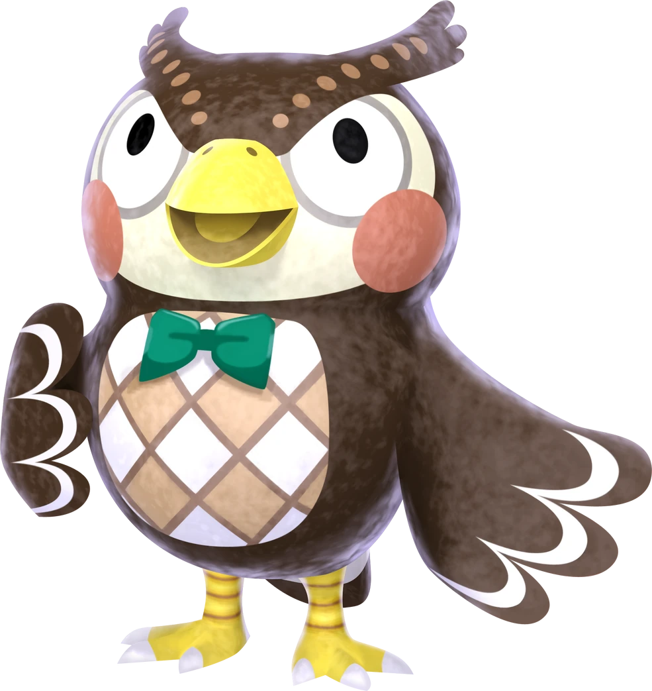
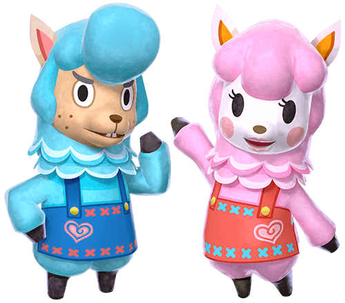
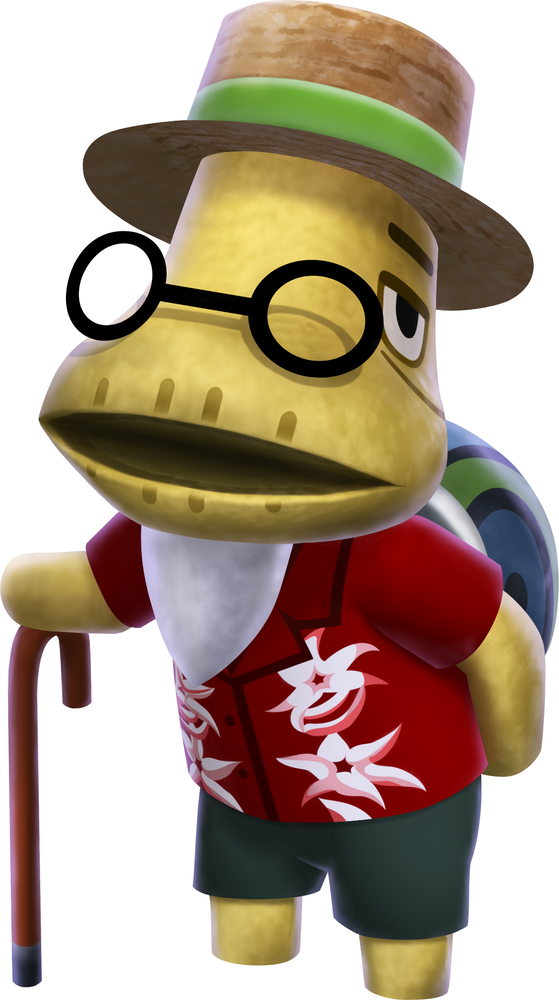
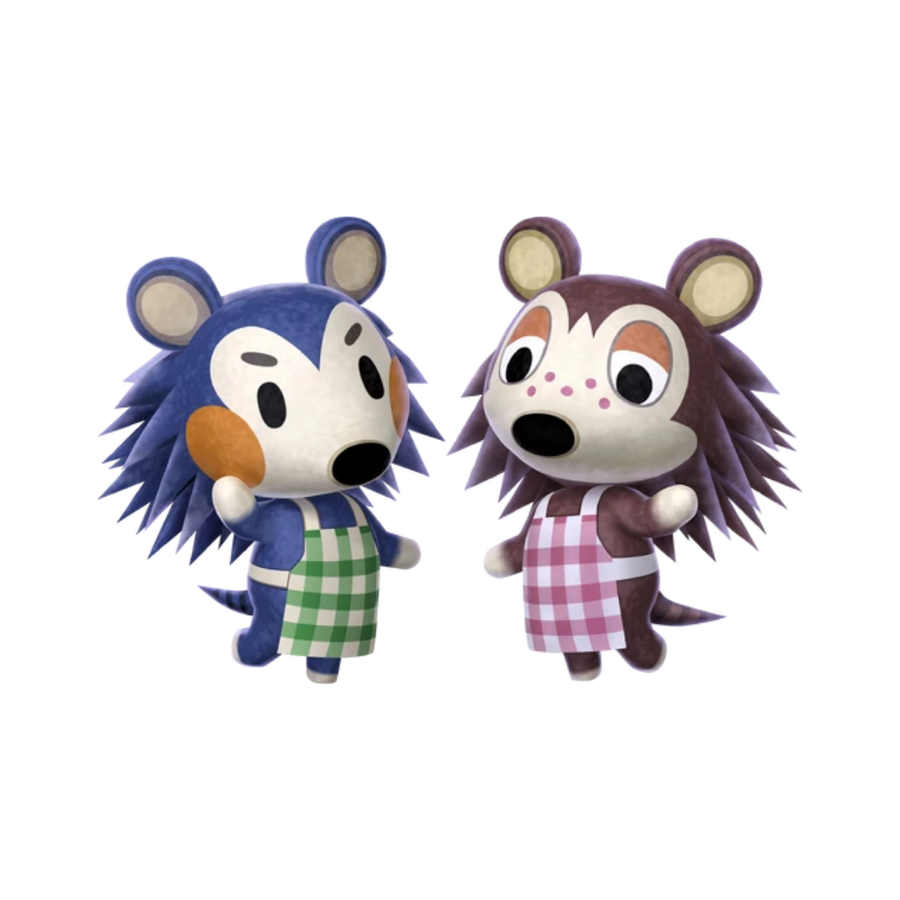
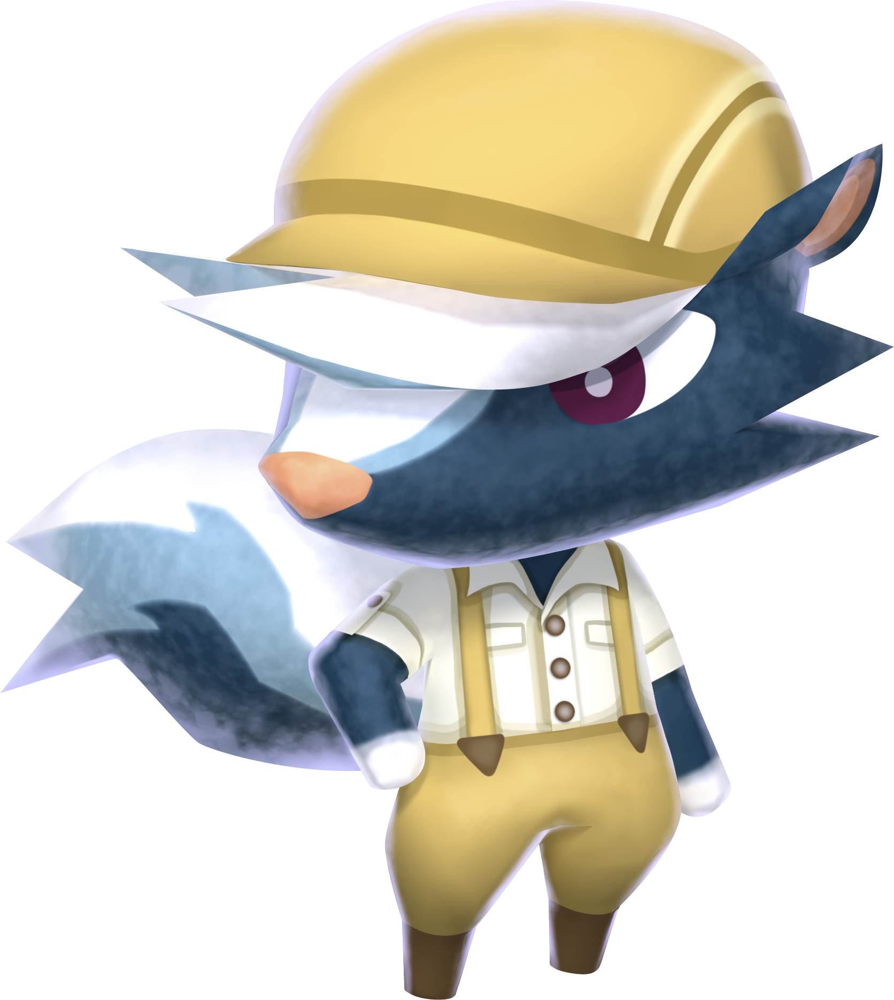

Get to know some of the special faces you'll meet in your brand new town! From hardworking public servants to your local shopkeepers, everyone has a story to share.

As your trusty secretary, Isabelle is always ready to help you manage public works projects, plan town events, and keep things running smoothly as Mayor!

Now running Nook's Homes, this savvy entrepreneur will help you expand your house, remodel your exterior, and build your dream estate piece by piece. For the right amount of Bells of course.

The all too famous musical dog superstar! This cool dog can be found behind the DJ booth at Club LOL on weekend nights and don't forget to drop by on Weekends where he'll play live.

This sleepy owl manages your town's museum. Drop off fossils, fish, bugs, and art pieces, and he'll gladly give you fascinating facts about each exhibit!

Reese runs the recycling shop where you can sell your unwanted items and furniture. Her husband Cyrus is a talented craftsman who can customize your furniture into brand-new colors and styles.

The retired former mayor of your town now spends his golden years living it up on his own tropical resort island, hosting fun tours and mini-games for visitors!

Mable and Sable run the local tailor shop. While Mable greets customers with a cheerful smile, quiet Sable will warm up to you over time as you visit her daily. A surprise awaits you once you get to know her!

A hardworking skunk who sets up an independent shop on Main Street, offering a stylish selection of shoes, socks, and boots to complete your outfit.